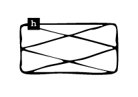

<!DOCTYPE html>
<html lang="kr"></html>
<head>
  <meta charset="UTF-8">
  <meta http-equiv="X-UA-compitable" content="IE-edge">
  <meta name="viewport" content="width=device-width", initial-scale="1.0">
  <title>h</title>
  <link href="h_.css" rel="stylesheet">
  <script type="text/javascript">
    document.oncontextmenu = function(){return false;}
    function redirectToRandomPage() { 
            // Array of specific pages on the website 
            const pages = [ 
                'index.html', 
                'index8.html', 
                'index15.html', 
                'index22.html' 
            ]; 
            // Generate a random index 
            const randomIndex = Math.floor(Math.random() * pages.length); 
            // Redirect to the randomly selected page 
            window.location.href = pages[randomIndex]; 
    }
  </script>
</head>
<body oncontextmenu="return false" onselectstart="return false" ondragstart="return false" onkeydown="return false">
  <div class="box-container">
      <div class="box-item1">
        <div class="map">
          <a onclick="redirectToRandomPage()">
            
          </a>
          <p>논문 발췌</p>
          <div class="comment">
            <p>해러웨이의 &lt;사이보그 선언문&gt;을 독해하는 데 도움이 되는 논문의 일부를 발췌한 페이지. 다양한 논의를 통해 해러웨이의 세계관을 깊이 이해할 수 있다.</p>
          </div>
      </div>
    </div>
    <div class="box-item2">
      <div class="textbox-center">
        <div class="textbox1">
          <h2>‘포스트휴먼 페미니즘’ 사유의 전개와 특성: <br>한국 학술지 논문을 중심으로</h2>
        </div>
        <div class="textbox3">
          <p>충남대학교 대학원<br>여성젠더학과 여성젠더학전공<br>김유현<br>2024년 8월</p>
        </div>
        <br>
        <div class="textbox2">
          <p>‘포스트휴머니즘’은 이합 핫산(Hassan, 1977)이 휴머니즘의 종말로 새로운 용어가 필요하다고 주장하며 제안한 개념이다. 500년간 이어져오던 휴머니즘이 인간의 욕망과 그 발현 등과 같은 인간에 대한 형상의 변화로 인해 끝이 다가오고 있다고 보았던 것이다(최병학, 2018, 284쪽).</p>
        </div>
        <div class="textbox2">
          <p>맨프레드 클라인즈(Manfred Clynes)와 네이선 클라인(Nathan Kline)이 1960년에 발표한 논문 「사이보그와 우주들」에서 처음으로 사용한 ‘사이보그’란 용어는 ‘사이버네틱스(cybernetics)’와 ‘유기체(organism)’의 합성어로 ‘무생물과 생물이 결합된 자기조절 유기체’를 의미한다. 도나 해러웨이(Haraway, 1985/2019)가 「사이보그 선언」이란 글을 발표해 사이보그를 성차별을 극복하는 사회정치적 상징으로 제시한 후 사이보그학이 출현하였다(Gray, 2016). 해러웨이는 포스트휴먼주의가 트랜스휴먼주의의 유토피아적 시각으로 수렴된다고 간주하여 사이보그를 ‘포스트휴먼’이라는 용어로 표현하는 것을 꺼린다(Gane, 2006, p.140). 그럼에도 불구하고 그녀의 사이보그 개념은 포스트휴머니즘, 특히 추후 설명할 비판적 포스트휴머니즘 개념에 여전히 큰 영향을 미치고 있으며(Duncan et al., 2023, p.18), 사이보그는 포스트휴먼의 몸을 대표한다(마정미, 2008).</p>
        </div>
        <div class="textbox2">
          <p>포스트휴먼에 대한 시각은 크게 두 가지로 나눠 볼 수 있는데, 하나는 과학기술을 통해 인간의 지성적·육체적·심리적 능력 향상을 추구하는 트랜스휴머니즘(Transhumanism)이다. 다른 하나는 과학기술의 발달로 인간과 기계의 경계가 흐려지는 것을 토대로 서구의 백인·남성·이성 중심의 이분법적 사고에 도전하는 비판적 포스트휴머니즘(Critical Posthumanism)이다.</p>
        </div>
        <div class="textbox2">
          <p>‘트랜스휴머니스트 선언’에서 닉 보스트롬(Bostrom, 2003)은 트랜스휴머니즘을 다음과 같이 설명한다.<br>1. 응용이성을 통해 인간의 지적, 신체적, 심리적 능력을 향상시켜서 노화를 제거하는 기술을 개발하고 보급하여 인간의 조건을 근본적으로 개선할 수 있다는 가능성과 바람직함을 주장하는 지적, 문화적 운동<br>2. 인간의 근본적 한계를 극복할 수 있는 기술의 영향, 약속, 그리고 잠재적 위험에 대한 연구와 그러한 기술을 사용하고 개발하는데 관련된 윤리적 문제들에 대한 연구(Bostrom, 2003, p.1)</p>
        </div>
        <div class="textbox2">
          <p>하지만 트랜스휴머니즘에 대한 비판적 시선도 존재한다. 프란시스 후쿠야마(Francis Fukuyama)는 이러한 트랜스 휴머니즘을 “세상에서 가장 위험한 생각”(신상규, 2012, 198-199쪽)이라고 비판한다. 그에 따르면, 기존의 평등 사상은 피부색, 외모, 지능과 관계없이 모든 인간이 고유한 인간의 본질을 지니고 있으며, 모든 개인은 고유한 가치를 지니고 있다고 간주한다. 그러나 이러한 인간의 본질을 변화시켜 더 나은 존재로 만들고자 하는 트랜스휴머니즘의 프로젝트에서는 경제적 능력에 따라 누군가는 앞서나가고 누군가는 뒤처질 수 있게 된다는 점에서 평등이라는 개념에 위협적이기 때문이다. 또한 이러한 변화는 예측 불가능한 결과를 야기할 위험이 있다는 점에서 비판받는다(Fukuyama, 2004).</p>
        </div>
        <div class="textbox2">
          <p>비판적 포스트휴머니즘은 트랜스휴머니즘과 달리, 기술로 신체가 강화된 인간이 아닌, 우리가 일상적으로 생각하는 인간에 대한 이해에 균열을 내는 새로운 서사의 캐릭터로 포스트휴먼을 제안한다.</p>
        </div>
        <div class="textbox2">
          <p>앞서 언급했듯이 헤일스는 노버트 위너, 존 폰 노이만, 클로드 섀넌 등이 주축이 되어 진행된 메이시 회의에서 제안된 사이버네틱스라는 개념을 비판한다. 이 개념은 동물, 인간, 기계에 동일하게 적용되는 커뮤니케이션 및 제어 이론을 만들고자 하며 정보를 본질로 보기에 신체를 없애도 된다는 환상을 부추긴다고 보기 때문이다(Hayles, 1999/2013, p.39). 헤일스는 이러한 사이버네틱스의 관점들은 신체보다 정신을 우위에 두는 인간중심주의와 자유주의적 휴머니즘을 포스트휴먼 영역까지 확장시키는 것이라고 보았다(p.503).</p>
        </div>
        <div class="textbox2">
          <p>다시 말해 포스트휴먼 주체는 탈-신체화된 사이보그가 아닌 새로운 기술 환경 속에서 다른 방식으로 ‘체현(embodiment)’되고 ‘체화(incorporation)’된 주체이며, 인간행위자와 비-인간 행위자가 함께 작동하는 ‘분산인지 시스템’이라고 할 수 있다(김재희, 2014, 225-227쪽). 즉, 탈신체화하려는 트랜스휴머니즘 이론과는 달리, ‘체현(embodiment)’과 ‘체화(incorporation)’ 등을 통한 물질적 신체성에 주목하여 새로운 포스트휴먼 개념을 만들어 나가고자 한 것이다.</p>
        </div>
        <div class="textbox2">
          <p>브라이도티(Braidotti)는 들뢰즈의 기관 없는 신체의 개념을 수용하여 주체는 육체로부터 체현되어 언제나 변형을 겪는 파편적이며 복수적인 것이라고 보았다(김은주 2009, 39쪽).</p>
        </div>
        <div class="textbox2">
          <p>이렇듯 비판적 포스트휴머니즘은 육체의 유한성을 인정하고 기술과 결합하여 경험을 확장, 연장하고 관계를 확장하는 포스트휴먼 주체성을 강조한다(박선희, 2019, 71쪽).</p>
        </div>
        <div class="textbox2">
          <p>‘신물질론(New-materialism)’은 비인간 물질이 인간과 같은 외부의 요인으로 인해서만 변화할 수 있는 것이 아니라 그 물질 자체의 내적인 힘과 역량으로 변화할 수 있으며, 더 나아가 인간에게도 영향을 미칠 수 있다고 보는 시도를 의미한다(문규민, 2022).</p>
        </div>
        <div class="textbox2">
          <p>헤어브레히터(Herbrechter, 2009/2012)는 포스트휴먼시대의 문화적 재현에서 사이보그와 기형적인 ‘괴물’이 등장하게 되는 이유를 다음과 같이 설명한다. 사람들이 사이보그와 괴물로 인해 역겨움과 두려움을 느끼며 이로 인해 현재와는 다른 사고방식을 하게 되어 기존의 지배적 위계구조를 와해시킬 수 있기 때문인 것이다.</p>
        </div>
        <div class="textbox2">
          <p>크리스테바는 『공포의 권력』에서 ‘아브젝시옹(abjection)’과 ‘비체(아브젝트, abject)’라는 개념을 이론화했다. 아브젝시옹은 “주체가 자신의 것으로 통합시키는 대신 자신의 경계 밖으로 밀어내고 배출해 버리려는 물건의 속성이나 그러한 배출 과정”(최애영, 2009, 313쪽)이다.</p>
        </div>
        <div class="textbox2">
          <p>크리스테바는 이러한 개념을 정신분석학에까지 확대한다. 여성의 생리혈과 출산 시 나오는 탯줄과 불순물 등은 어머니의 몸을 더럽고 비천한 존재로 여기게 만들기에 주체는 탄생을 통해 어머니와의 분리를 꿈꾼다. 이후 아이는 상징계에 들어서면서 어머니와의 단절을 시도하나 어머니의 몸은 분리되었지만 완전분리될 수 없는 경계가 불분명한 공간이기에 어머니의 몸을 증오하게 된다.</p>
        </div>
        <div class="textbox2">
          <p>다시 말해 브라이도티는 여성들의 다양한 신체, 그리고 신체에 내재되어 있는 경험들의 차이를 인정하며 신체의 유동성과 가변성을 통해 주체를 형성해 나가야 함을 주장하는 것이다.</p>
        </div>
        <div class="textbox2">
          <p>결국, 이렇게 지속적으로 변용하는 ‘단일적이지 않은 주체’들을 횡단적으로 연결하는 주체가 브라이도티가 제시하는 ‘유목적 주체’이다.(김은주, 2019). 즉, 유목적 주체는 이렇게 각자의 차이들을 연결하고 서로 영향을 상호교환하며 끊임없이 바뀌어 나가는 것을 의미하는 것이다.</p>
        </div>
        <div class="textbox2">
          <p>해러웨이는 이 사이보그 선언이 페미니즘과 사회주의, 유물론에 충실한 정치 신화를 세우기 위함이며 사이보그는 무엇을 여성의 경험으로 볼 것인가의 기준을 바꾼다고 이야기한다. 지금까지 위계적 이원론 하에서 여성들에게 성역할이나 재생산 등을 강요하였으나 과학기술을 통해 인종·성·계급을 재배치하여 여성의 문제를 새로운 관점으로 바라볼 수 있을 것이며 여성에 대한 지위도 달라진다는 것이다.</p>
        </div>
        <div class="textbox2">
          <p>실제로 헤일스(1999/2013)는 ‘남자/인간’ 중심의 휴머니즘을 바탕으로 인간 의식을 우월하게 생각하며 신체를 기계를 통해 증강시켜야 한다고 주장하는 트랜스휴머니즘을 비판해 왔다.</p>
        </div>
        <div class="textbox2">
          <p>포스트휴먼 페미니즘 연구는 대체로 과학기술을 바탕으로 비인간 존재로서 타자화된 새로운 주체를 주요한 논의 대상으로 삼고 있다. 그러나 연구자들마다 그 지칭 용어는 제각각이다. ‘포스트휴먼’이라고 하는 연구자도 있으며 ‘사이보그’ 개념을 활용하는 연구자, 또는 ‘테크노 페미니즘’이나 ‘사이버 페미니즘’이라고 표현하는 연구자들도 존재한다. 이 개념들은 서로 중점을 두는 부분에서 다소 차이가 있기는 하지만 과학기술의 발달로 기계와 유기체가 결합되어 새로운 인간, 새로운 젠더 개념을 모색한다는 점에서 일맥상통하다.</p>
        </div>
        <div class="textbox2">
          <p>해러웨이가 사이보그를 “포스트젠더(postgender) 세계의 피조물”(Haraway, 1985/2019)이라고 말한 것에서 파생된 포스트젠더리즘은 기술과학을 통해 탈육체화, 탈자연화된 몸으로 젠더 정체성을 임의로 선택할 수 있다고 주장한다(이수안, 2015; 최복희, 2020). 탈육체화, 탈자연화된 몸은 과학기술과 결합되어 새롭게 나타난 인간의 육체를 포스트바디(post-body)(Babin, 2007; 박예은, 조미라, 2019에서 재인용)라고도 불린다. 이런 포스트바디를 통해 수행적 젠더정체성과 포스트휴먼적 주체성에 대해 고찰하기도 하며(권도경, 2021; 김윤경, 2019) 휴먼바디에 적용되던 젠더 고정관념이 여전히 포스트바디에도 적용됨을 비판하기도 한다(박예은, 조미라, 2019).</p>
        </div>
        <div class="textbox2">
          <p>라캉의 성구분 공식에 대한 김소연(2016)의 설명에 따르면, 남자는 자신의 모든 것이 남근에 속해 있으나 상징계로 들어와 남근을 상실하게 되면서 자신의 결여를 가려줄 대상 a를 필요로 한다. 그렇기에 남자는 남근 기능의 보편성에서 빠져나오기 위한 a에 대한 욕망의 악무한에 빠지게 된다. 그러나 여자는 남근의 보편성을 인정하지만, 자신의 모든 것이 남근에 속하지 않는 방식으로 거세에 대항하며 기존의 상징 질서를 탈구시키고 새로운 질서를 창조해 낸다. 이러한 점에서 보편성을 빠져나오는 예외가 아니라 보편성 내부에서 보편성을 기능 정지시키는 여자의 방식을 라캉이 지지한다는 것이다.</p>
        </div>
        <div class="textbox2">
          <p>그러나 사이보그를 통한 이분법의 해체에 의문이 제기되기도 한다. 이채리(2007)는 사이버 공간의 페미니즘의 의미를 연구하며 인간과 기계의 결합으로 수천 년 동안 이어오던 젠더 이분법을 해체할 수 있다는 해러웨이의 의견에 반기를 든다. 인간과 기계의 이분법 해체가 남성과 여성의 이분법의 해체를 야기하기 위해서는 인간이 남성을, 기계가 여성을 의미해야 한다는 것이다. 하지만 이들은 각자 가진 특성이 다르기에 인간과 기계의 경계가 사라진다고 해서 남성과 여성의 경계까지 사라진다는 것은 너무나 낙관적이고 가부장적 문화를 너무 쉽게 판단하는 것이라는 주장이다.</p>
        </div>
        <div class="textbox2">
          <p>포스트휴먼 페미니즘 연구들은 포스트휴먼 몸을 탈물질화된 것으로 간주하려는 시도들에 반대하며 몸의 물질성을 강조하는데, 이는 몸의 탈물질화가 젠더 해방을 가로막는다고 보기 때문이다. 송은주(2023)는 캐더린 헤일스의 연구를 따라가며 사이버네틱스가 주장하는 탈체현이 현실의 상황을 부수적인 것으로 취급하여 현실에서 발생되는 젠더 권력관계를 은폐시킨다고 보았다.</p>
        </div>
        <div class="textbox2">
          <p>포스트휴먼 페미니즘이 주장하는 이분법의 해체는 사실상 후기 구조주의 페미니스트들 또한 주장한 바 있다. 대표적으로 버틀러는 전통적인 형이상학적 전제를 거부하고 본질적인 차이와 이질성을 강조하여 남성중심주의와 고정된 성별 정체성을 해체시켜야 한다고 주장했다(이동수, 2004). 하지만, 포스트휴먼 페미니스트들은 후기구조주의 페미니스트들이 주장하는 담론의 결과물로서 성에 대한 설명이, 행위자의 신체에서 물질성을 지우고 신체를 “담론에 의해 수동적으로 기입되는 무력한 기체로 환원”(김남이, 2022, 33쪽)시킨다고 비판한다. 또한, 비인간이나 사물을 고려하지 않은 채 주체의 수행을 중요시한다는 점에서 여전히 인간중심적이라고 지적한다(김남이, 2022).</p>
        </div>
        <div class="textbox2">
          <p>해러웨이의 사이보그론은 신체의 변화 통해 새로운 정체성을 획득하며 브라이도티의 유목적 주체 개념은 차이를 바탕으로 타자와 관계 맺으며 관계적 주체를 형성할 수 있다고 보는 점에서 차이가 존재한다.</p>
        </div>
        <div class="textbox2">
          <p>이러한 의미에서 기존의 질서에 저항하기 위해 타자로 취급되던 여성 혹은 소수자들을 전면에 등장시켜 새로운 포스트휴먼 주체임을 보여주는 문학을 사이보그 글쓰기로 지칭할 수 있다.</p>
        </div>
        <div class="textbox2">
          <p>여기서 ‘실뜨기’는 함께 되기를 위한 관계 맺기를 의미하는 것으로 타자와 실을 주고받으면서 계속해서 새로운 매듭을 만들어 가는 과정으로 가끔은 기다리기도 하고 실패하기도 하는 행위이다. 이러한 실뜨기에서 ‘응답-능력’이 있다는 것은 서로 윤리적 책임을 지고 응답하는 것으로 고통을 해결해 주거나 과거의 세상으로 돌아가는 것이 아닌 “부분적인 회복 그리고 함께 잘 지내기를 위한 평범한 가능성(Haraway, 2021, p.10; 이현재, 2022, 43-45쪽에서 재인용)”을 의미한다.</p>
        </div>
      </div>
    </div>
    <div class="box-item3">
      <a href="d.html">
        </a>
        <span class="text1">d. 픽션 속<br>사이보그적 여성</span>
      <a href="e.html">
        </a>
        <span class="text2">e. 그 자체로<br>신성한 것은<br>없다 </span>
      <a href="l.html">
        </a>
        <span class="text3">l. 사이보그적 존재들의 확장된 신체</span>
      <a href="n.html">
        </a>
        <span class="text4">n. 역사 속<br>사이보그적 여성</span>
    </div>
  </div>
</body>